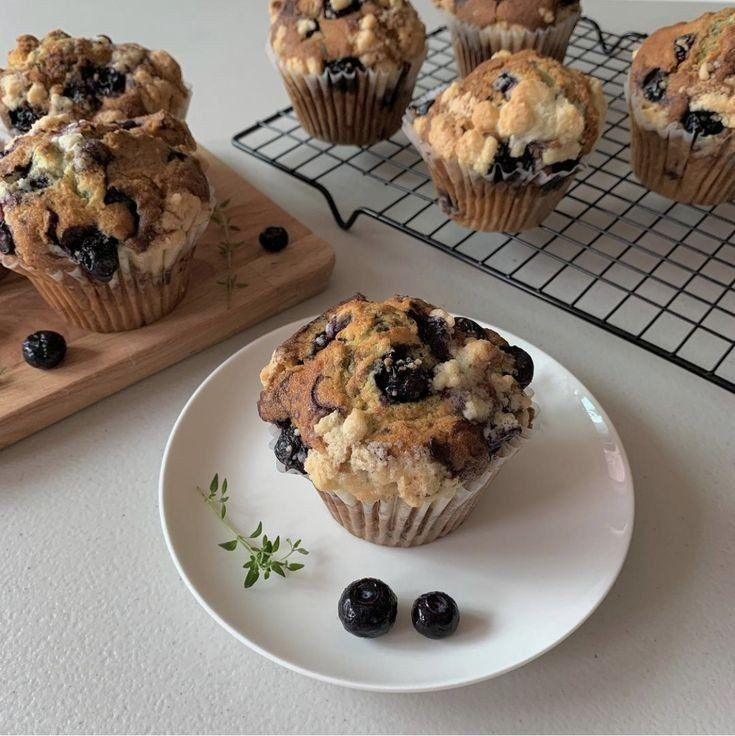

BLUEBERRY MUFFINS

INGREDIENTS
1¾ cups all-purpose flour, spooned and leveled, plus more for the blueberries
2 teaspoons baking powder
½ teaspoon baking soda
½ teaspoon salt
¾ cup whole milk Greek yogurt
¾ cup cane sugar
2 large eggs
⅓ cup vegetable oil
¼ cup milk
2 teaspoons vanilla extract
1½ cups blueberries
½ cup all-purpose flour, spooned and leveled
⅓ cup brown sugar
¼ teaspoon cinnamon
4 tablespoons cold unsalted butter, cubed
INSTRUCTIONS
-
Preheat the oven to 400°F. Lightly oil or spray a 12-cup muffin tin or line it with muffin liners.
-
Make the crumble topping: In a medium bowl, whisk together the flour, brown sugar, and cinnamon. Use your hands or a fork to work in the butter until the mixture is crumbly. Set aside while you make the muffin batter.
-
Make the muffins: In a medium bowl, whisk together the flour, baking powder, baking soda, and salt.
-
In a large bowl, whisk together the yogurt, sugar, eggs, vegetable oil, milk, and vanilla.
-
In a small bowl, toss the blueberries with ½ teaspoon flour.
-
Add the dry ingredients to the wet ingredients and stir until just combined. Do not overmix. Fold in the blueberries. Use a ⅓-cup measuring cup to divide the batter among the muffin cups. Evenly sprinkle with the crumble topping.
-
Bake for 17 to 20 minutes, or until the tops spring back to the touch and a toothpick inserted in the center comes out clean. Let cool in the pan for 10 minutes, then transfer to a wire rack to cool completely.